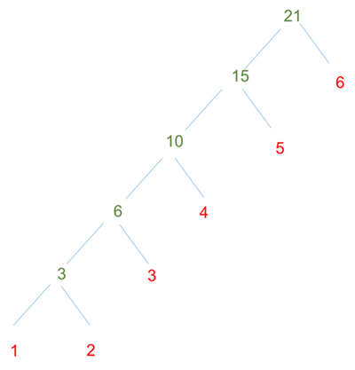

Scala Basics
In this section we will briefly go through the essential knowledge about Scala.
You will first learn how to work with Scala shell, then learn how to use variables, functions with examples.
Finally, we give instructions about how to compile and run a standalone program using sbt.
1. Scala shell
You can open a Scala shell by typing scala.
Info
Or, you can use sbt by typing sbt console.
The second approach will help you add your project source code and dependencies into class path, so that your functions or library functions will be available for you to try in the interactive shell.
The third approach is creating a new note in the Zeppelin notebook and choosing the default spark as the interpreter.
In this tutorial, we will use the interactive shell or Zeppelin for simplicity.
Once starting the Scala shell you will see
$ scala
Welcome to Scala version 2.10.5 (Java HotSpot(TM) 64-Bit Server VM, Java 1.8.0).
Type in expressions to have them evaluated.
Type :help for more information.
scala>
You can type :quit to stop and quit the shell, but don't do that now :-)
Next you will learn some Scala operations in the shell with the following materials.
2. Variables
2.1. val and var
In Scala, there are two types of variable, immutable val and mutable var.
Unlike some functional programming language that requires immutable variables, Scala allows existence of mutable variables but immutable is recommended as it is easier to verify the correctness of your program.
2.1.1. val
Define an immutable variable as
scala> val myInt = 1 + 1
myInt: Int = 2
scala> myInt = 3
where val is a keyword in scala that makes the variables immutable.
If you reassign a value to myInt, error will be reported.
scala> myInt = 3
<console>:8: error: reassignment to val
myInt = 3
^
scala>
The synopsis of a varialbe is:
scala> val i:String = "abc"
i: String = abc
valmeans it it is immutable variable, you can use "var" to define a mutable variableiis the name of this variableStringis the type of this string, it can be omitted here"abc"is the value of this variable
Warning
In the interactive shell, it's possible to redefine variable with same name. In Scala source code files, it's not allowed.
scala> val a = 1
a: Int = 1
scala> val a = 2
a: Int = 2
2.1.2. var
Instead, variables declared with var are mutable.
Ideally, we try to use val instead of var if possible as a good practice of functional programming.
Info
You may have concern that maybe too many immutable variables will be declared. Actually, with chained function calls, that situation is not the case for well organized code.
An example of mutable variable is
scala> var myString = "Hello Big Data"
myString: String = Hello Big Data
scala> myString = "Hello Healthcare"
myString: String = Hello Healthcare
2.2. Type
Scala may seem like a script language like JavaScript or Python, as variable type is not specified explicitly. In fact, Scala is a static type language and the compiler can implicitly infer the type in most cases. However, you can always specify a type as
scala> val myDouble: Double = 3
myDouble: Double = 3.0
It is always encouraged to specify the type so unless the type is too obvious.
Besides simple built-in variable types like Int, Double and String, you will also learn about List and Tuple in the training:
scala> val myList: List[String] = List("this", "is", "a", "list", "of", "string")
myList: List[String] = List(this, is, a, list, of, string)
scala> val myTuple: (Double, Double) = (1.0, 2.0)
myTuple: (Double, Double) = (1.0,2.0)
Here the List[String] is syntax of generics in Scala, which is same as C#. In the above example, List[String] means a List of String.
Similarly, (Double, Double) means a two-field tuple type and both the 1st element and the 2nd element should be of type Double.
3. Functions
You can define a function and invoke the function like
scala> def foo(v0:Int, v1:Int):Int = {
| println(v0 max v1)
| v0 + v1
| }
foo: (v0: Int, v1: Int)Int
scala> foo(1, 2)
2
res0: Int = 3
Another example is
scala> def triple(x: Int): Int = {
x*3
}
triple: (x: Int)Int
scala> triple(2)
res0: Int = 6
Where x:Intis a parameter and its type, and the second Int is thefunction` return type.
There's no explicit return statement, but the result of the last expression (v0 + v1 and x * 3) will be returned (similar to some other programming languages like Ruby).
In this example, as there is only one expression and the return type can be inferred by the compiler, you may define the function as
def triple(x: Int) = x*3
Scala is object-oriented (OO), function calls on a class method are straightforward like most OO languages (e.g. Python, Java, C#)
scala> myString = "Hello Healthcare"
myString: String = Hello Healthcare
scala> myString.lastIndexOf("Healthcare")
res1: Int = 6
If the function does not have parameters, you can even call it without parenthesis
scala> val myInt = 2
scala> myInt.toString
res2: String = 2
You can also define an anonymous function and pass it to a variable like a lambda expression in some other languages such as Python:
scala> val increaseOne = (x: Int) => x + 1
increaseOne: Int => Int = <function1>
scala> increaseOne(3)
res3: Int = 4
Anonymous function is very useful as it can be passed as a parameter to a function call
scala> myList.foreach{item: String => println(item)}
this
is
a
list
of
string
where item: String => println(item) is an anonymous function.
Info
Please refer to this page and this page for more information about curly braces and parentheses.
This function call can be further simplified to
scala> myList.foreach(println(_))
scala> myList.foreach(println)
where _ represents the first parameter of the anonymous function with body println(_).
Additional _ can be specified to represent more than one parameter.
For example, we can calculate the total payment that a patient made by
scala> val payments = List(1, 2, 3, 4, 5, 6)
payments: List[Int] = List(1, 2, 3, 4, 5, 6)
scala> payments.reduce(_ + _)
res0: Int = 21
In the above example, reduce will aggregate List[V] into V and we defined the aggregator as _ + _ to sum them up.
Of course, you can write that more explicitly like
scala> payments.reduce((a, b) => a+b)
res1: Int = 21
Here reduce is a construct from functional programming.
It can be illustrated with the figure below where a function f is applied to one element at a time and the result together with next element will be parameters of the next function call until the end of the list.

It's important to remember that for reduce operation, the input is List[V] and the output is V.
You can learn more about such operations from Wikipedia.
In contrast to reduce, you can of course write code using for loop, which is verbose and very rare in Scala,
scala> var totalPayment = 0
totalPayment: Int = 0
scala> for (payment <- payments) {
totalPayment += payment
}
scala> totalPayment
res2: Int = 21
3.1. Code Blocks
We can create a code block anywhere, and the last line is the result of this block. For example,
def foo(i:Int) = {
println(s"value: $i")
i * 2
}
val newList = List[Int](1, 2, 3).map(i => foo(i))
We can use the follow lines instead:
val newList = List[Int](1, 2, 3).map(i => {
println(s"value: $i")
i * 2
})
A better practice here is:
val newList = List[Int](1, 2, 3).map{i =>
println(s"value: $i")
i * 2
}
4. Class
Declaration of a class in Scala is as simple as
scala> class Foo(a:String, b:Int) {
| def length = a.length
| }
defined class Foo
scala> val foo:Foo = new Foo("Hello, World!", 3)
foo: Foo = Foo@6438a396
scala> println(foo.length)
13
Another example is
scala> class Patient(val name: String, val id: Int)
defined class Patient
scala> val patient = new Patient("Bob", 1)
patient: Patient = Patient@755f5e80
scala> patient.name
res13: String = Bob
Here we see the succinct syntax of Scala again.
class Patient(val name: String, val id: Int) not only defines constructor of Patient but also defines two member variables (name and id).
A special kind of class that we will use a lot is the Case Class.
For example, Case Class can be declared as
scala> case class Foo(a:String, b:Int)
defined class Foo
scala> val foo:Foo = Foo(a = "Hello, World!", b = 3)
foo: Foo = Foo(Hello, World!,3)
scala> println(foo.a)
Hello, World!
Info
Please refer to this page for the differences between case class and class.
4.1. Object
Functions/variables in Object is similar to the static function and variable in Java.
scala> object Foo {
| def greeting() {
| println("Greeting from Foo")
| }
| }
defined object Foo
scala> Foo.greeting()
Greeting from Foo
What is ought to be highlighted is the usage of "apply".
SomeObject.apply(v:Int) equals SomeObject(v:Int)
scala> case class Foo(a:String, b:Int)
| object Bar {
| def apply(a:String): Foo =
| Foo(a, a.length)
| }
defined class Foo
defined object Bar
scala> val foo = Bar("Hello, World!")
foo: Foo = Foo(Hello, World!,13)
Warning
You may get a warning if you execute the above code individually.
warning: previously defined object Foo is not a companion to class Foo.
Companions must be defined together; you may wish to use :paste mode for this.
If you are using a terminal, a better practice is
scala> :paste
// Entering paste mode (ctrl-D to finish)
case class Foo(a:String, b:Int)
object Bar {
def apply(a:String): Foo =
Foo(a, a.length)
}
// Exiting paste mode, now interpreting.
defined class Foo
defined object Bar
scala> val foo = Bar("Hello, World!")
foo: Foo = Foo(Hello, World!,13)
5. Pattern Matching
You may know the switch..case in other languages.
Scala provides a more flexible and powerful technique, Pattern Matching.
The below example shows one can match by-value and by-type in one match.
val payment:Any = 21
payment match {
case p: String => println("payment is a String")
case p: Int if p > 30 => println("payment > 30")
case p: Int if p == 0 => println("zero payment")
case _ => println("otherwise")
}
It's very convenient to use case class in pattern matching
scala> case class Patient(val name: String, val id: Int)
scala> val p = new Patient("Abc", 1)
p: Patient = Patient(Abc,1)
scala> p match {case Patient("Abc", id) => println(s"matching id is $id")}
matching id is 1
Here we not only matched p as Patient type, but also matched the patient name and extracted one member field from the Patient class instance.
Info
How to add default case to above match example?
Answer:
p match {
case Patient("Abc", id) => println(s"matching id is $id")
case _ => println("not matched")
}
6. Case Study of some Common Types
6.1. Option, Some, None
We can use null in Scala as a null pointer, but it is not recommended.
We are supposed to use Option[SomeType] to indicate this variable is optional.
We can assume every variable without Option is not a null pointer if we are not calling Java code.
There are two methods to check whether an Option variable is null (undefined) or not.
The first one is Some:
val oi = Option(1)
val i = oi match {
case Some(ri) => ri
case None => -1
}
println(i)
Another set of examples are:
val myMap: Map[String, String] = Map("key1" -> "value")
val value1: Option[String] = myMap.get("key1")
val value2: Option[String] = myMap.get("key2")
val i = myMap.get("key1") match {
case Some(ri) => ri
case None => "None"
}
println(i)
val i = myMap.get("key2") match {
case Some(ri) => ri
case None => "None"
}
println(i)
The second method is the function isDefined / isEmpty.
val oi = Option(1)
if(oi.isDefined) {
println(s"oi: ${oi.get}")
} else {
println("oi is empty")
}
Warning
Option(null) returns None, but Some(null) is Some(null) which is not equals None.
match is a useful reserved word, we can use it in various situations.
The first is the "switch--case" scenario.
true match {
case true => println("true")
case false => println("false")
}
The second usage is filtering by partial input values.
This example only retrieves the value of B.a.j.
_ is used as a placeholder and should never be matched.
6.2. Common methods in List, Array, Set, and so on
In Scala, we always transfer the List (Array, Set, Map, etc.) from one status to another.
function toList, toArray, toSet
- convert each other.
function par
- Parallelize List, Array, and Map, the result of
Seq[Int]().parisParSeq[Int], you will able to process each element in parallel when you are using foreach, map, etc., and unable to callsortbefore you are usingtoList.
function distinct
- Removes duplicate elements
function foreach
- Process each element and return nothing
List[Int](1,2,3).foreach{ i =>
println(i)
}
It prints 1, 2, 3 in order.
List[Int](1,2,3).par.foreach{ i =>
println(i)
}
Also prints 1, 2, 3, but the order is not guaranteed.
function map
- Process each element and construct a List using the return value
List[Int](1,2,3).map{ i => i + 1 }
It will return List[Int](2,3,4).
The result of List[A]().map(some-oper-return-type-B) is List[B], while the result of Array[A]().map map is Array[B].
function flatten
- The flatten method takes a list of lists and flattens it out to a single list:
scala> List[List[Int]](List(1,2),List(3,4)).flatten
res1: List[Int] = List(1, 2, 3, 4)
scala> List[Option[Integer]](Some(1),Some[Integer](null),Some(2),None,Some(3)).flatten
res2: List[Integer] = List(1, null, 2, 3)
function flatMap
- The flatMap is similar to
map, but it takes a function returning a list of elements as its right operand. It applies the function to each list element and returns the concatenation of all function results. The result equals tomap+flatten
function collect
- The iterator that is obtained from applying the partial function to every element in it for which it is defined and collecting the results.
scala> List(1,2,3.4,"str") collect {
| case i:Int => (i * 2).toString
| case f:Double => f.toString
| }
res0: List[String] = List(2, 4, 3.4)
The function matches elements in Int and Double, processes them, and returns the value, but ignores string elements.
function filter
- Filter this list
scala> List(1,2,3).filter(_ % 2 == 0)
res1: List[Int] = List(2)
function filterNot
- Similar to filter
scala> List(1,2,3).filterNot(_ % 2 == 0)
res2: List[Int] = List(1, 3)
function forall
- Return true if All elements are return true by the partial function. It will immediately return once one element returns false, and ignore the rest elements.
scala> List(2,1,0,-1).forall{ i =>
| val res = i > 0
| println(s"$i > 0? $res")
| res
| }
2 > 0? true
1 > 0? true
0 > 0? false
res0: Boolean = false
function exists
- Return true if there are at least One element returns true.
scala> List(2,1,0,-1).exists{ i =>
| val res = i <= 0
| println(s"$i <= 0? $res")
| res
| }
2 <= 0? false
1 <= 0? false
0 <= 0? true
res2: Boolean = true
function find
- Return the first element returns true by the partial function.
Return
Noneif no elemet is found.
scala> List(2,1,0,-1).find{ i =>
| val res = i <= 0
| println(s"$i <= 0? $res")
| res
| }
2 <= 0? false
1 <= 0? false
0 <= 0? true
res3: Option[Int] = Some(0)
function sortWith
- sort the elements
scala> List(1,3,2).sortWith((leftOne,rightOne) => leftOne > rightOne)
res5: List[Int] = List(3, 2, 1)
function zipWithIndex
- zip the elements with appended indices
List("a","b").zipWithIndex.foreach{ kv:(String,Int) => println(s"k:${kv._1}, v:${kv._2}")}
It will rebuild a List with indices.
k:a, v:0
k:b, v:1
keyword for
- Scala's keyword
forcan be used in various situations.
Basically,
for{
i <- List(1,2,3)
} yield (i,i+1)
It equals:
List(1,2,3).map(i => (i, i+1))
Besides,
for{
i <- List(1,2,3)
j <- List(4,5,6)
} yield (i,j)
We will get the cartesian product of List(1,2,3) and List(4,5,6): List((1,4), (1,5), (1,6), (2,4), (2,5), (2,6), (3,4), (3,5), (3,6))
We can add a filter in the condition:
for{
i <- List(1,2,3)
if i != 1
j <- List(4,5,6)
if i * j % 2 == 1
} yield (i,j)
the result is : List((3,5))
Another usage of for is as follows:
Let's define variables as follows:
val a = Some(1)
val b = Some(2)
val c = Some(3)
We can execute like this:
for {
i <- a
j <- b
k <- c
r <- {
println(s"i:$i, j:$j, k:$k")
Some(i * j * k)
}
} yield r
The response is:
i:1, j:2, k:3
res9: Option[Int] = Some(6)
Let's define b as None:
scala> val b:Option[Int] = None
b: Option[Int] = None
scala> for {
| i <- a
| j <- b
| k <- c
| r <- {
| println(s"i: $i, j:$j, k:$k")
| Some(i * j * k)
| }
| } yield r
res14: Option[Int] = None
keyword while
- Similar to while in java
var i = 0
while ({
i = i + 1
i < 1000
}){
// body of while
println(s"i: $i")
}
keyword to, until
— (1 to 10) will generate a Seq, with the content of (1,2,3,4…10), (0 until 10) will generate a sequence from 0 to 9. With some test, (0 until 1000).map(xxx) appears to be slower than var i=0; while( i < 1000) { i += 1; sth. else}, but if the body of map is pretty heavy, this cost can be ignored.
function headOption
- Get the head of one list, return None if this list is empty
function head
- Get the head of one list, throw an exception if this list is empty
function take
- Get first at most N elements. (from left to right)
scala> List(1,2,3).take(2)
res0: List[Int] = List(1, 2)
scala> List(1,2).take(3)
res1: List[Int] = List(1, 2)
function drop
- Drop first at most N elements.
scala> List(1,2,3).drop(2)
res2: List[Int] = List(3)
scala> List(1,2).drop(3)
res3: List[Int] = List()
function dropRight
- drop elements from right to left.
function slice
- Return list in
[start-offset, end-offset)
scala> List(1,2,3).slice(1,2)
res7: List[Int] = List(2)
scala> List(1,2,3).slice(2,2)
res8: List[Int] = List()
val offset = 1
val size = 3
List(1,2,3,4,5).slice(offset, size + offset)
If the end-offset is greater than the length of this list, it will not throw an exception.
function splitAt
- Split this list into two from offset i
scala> List(1,2,3).splitAt(1)
res10: (List[Int], List[Int]) = (List(1),List(2, 3))
function groupBy
- Partitions a list into a map of collections according to a discriminator function
scala> List(1,2,3).groupBy(i => if(i % 2 == 0) "even" else "odd" )
res11: scala.collection.immutable.Map[String,List[Int]] = Map(odd -> List(1, 3), even -> List(2))
function partition
- Splits a list into a pair of collections; one with elements that satisfy the predicate, the other with elements that do not, giving the pair of collections (xs filter p, xs.filterNot p).
scala> List(1,2,3).partition(_ % 2 == 0)
res12: (List[Int], List[Int]) = (List(2),List(1, 3))
function grouped
- The grouped method chunks its elements into increments.
scala> List(1,2,3,4,5).grouped(2)
res13: Iterator[List[Int]] = Iterator(List(1, 2), List(3, 4), List(5))
You can visit this webpage for more information.
We also highly recommended to read the book Programming in Scala for more detail instruction.
7. Standalone Program
Working with large real-world applications, you usually need to compile and package your source code with some tools. Here we show how to compile and run a simple program with sbt. Run the sample code in 'hello-bigdata' folder
% cd /bigdata-bootcamp/sample/hello-bigdata
% sbt run
Attempting to fetch sbt
######################################################################### 100.0%
Launching sbt from sbt-launch-0.13.8.jar
[info] .....
[info] Done updating.
[info] Compiling 1 Scala source to ./hello-bigdata/target/scala-2.10/classes...
[info] Running Hello
Hello bigdata
[success] Total time: 2 s, completed May 3, 2015 8:42:48 PM
The source code file hello.scala is compiled and invoked.
8. Further Reading
This is a very brief overview of important features of the Scala language. We highly recommend readers to checkout references below to get a better and more complete understanding of the Scala programming language.